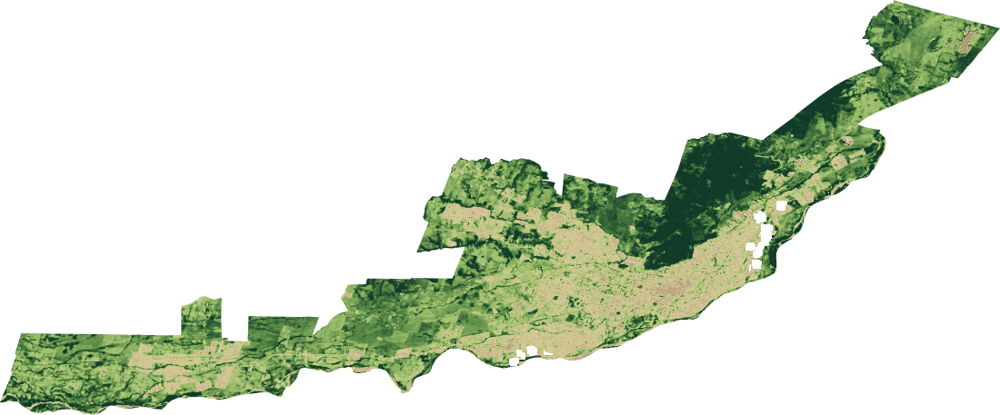
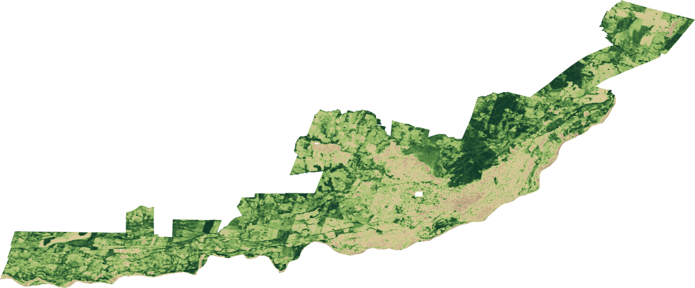
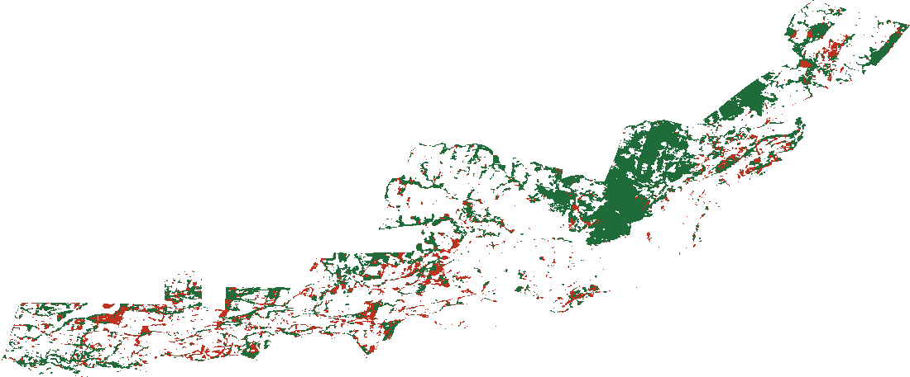
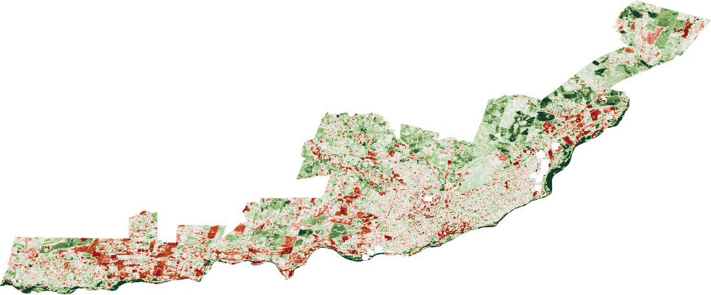
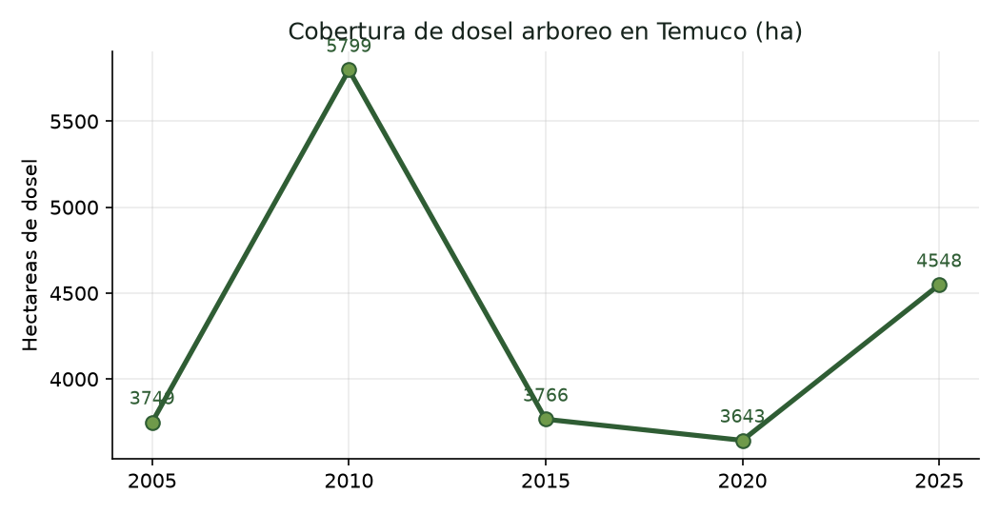

Documentar, cuantificar y visibilizar la pérdida de árboles urbanos —talas, podas severas y áreas verdes que desaparecen— cruzando imágenes satelitales históricas con la observación de los vecinos.


Imágenes NDVI reales (Google Earth Engine, verano austral). Verde intenso = más vegetación. El satélite localiza dónde cambia el dosel; ver la sección Mapas para la lectura completa.
Frente a las constantes talas, podas severas y pérdida de áreas verdes en Temuco, la observación de los vecinos suele quedarse sin respaldo cuantitativo. Este proyecto le da una base técnica y científica a esa vigilancia comunitaria.
No basta con saber cuánta cobertura arbórea se ha perdido: buscamos entender por qué está ocurriendo. El análisis cruza los datos para evidenciar si existe una relación directa entre la desaparición de los árboles y la expansión inmobiliaria, la construcción de carreteras y otras transformaciones del paisaje urbano —como ocurrió con las aperturas viales hacia Pablo Neruda en los ejes de Avenida Imperial y Caupolicán.
Monitorear, medir y visibilizar la pérdida del arbolado y su impacto en Temuco, integrando herramientas satelitales de análisis histórico con la participación ciudadana activa para proteger y gestionar el patrimonio natural urbano.
Aplicar teledetección (índices de vegetación) para calcular la cobertura de dosel perdida en intervalos de cinco años, pasando del conteo manual "árbol por árbol" a una medición automatizada de todo el territorio urbano.
Identificar los sectores de mayor cambio con mapas de "antes y después", demostrando la relación entre las obras de conectividad vial, el auge inmobiliario y la eliminación de áreas verdes consolidadas.
Centralizar el material fotográfico, las denuncias por podas y talas, y las mediciones de los vecinos a través de la plataforma del Observatorio.
Traducir los datos técnicos en impactos cotidianos: pérdida de sombra, efecto en la temperatura de los barrios, e identificación y protección del arbolado patrimonial restante.
La tecnología entrega las métricas; la comunidad aporta el contexto. El proyecto vive en el cruce de ambas.
Observar la ciudad desde arriba. Analizando 20 años de imágenes, algoritmos detectan automáticamente el follaje y generan "mapas de calor" que muestran dónde estaba el verde y dónde hoy hay cemento.
Un repositorio vivo impulsado por los vecinos: fotografías, denuncias en tiempo real de talas injustificadas y trabajo de campo —como las mediciones de tronco y copa en Caupolicán.
La integración de los datos. Cuando el Observatorio recibe una alerta —por ejemplo, los árboles eliminados por la carretera en Av. Imperial— el equipo técnico va al registro satelital y extrae cuántos metros cuadrados de sombra se perdieron en esa obra. Así, la indignación ciudadana se convierte en evidencia técnica concreta.
Cada corte usa el mejor sensor disponible manteniendo comparabilidad, siempre en ventana de verano austral para captar el dosel pleno.
El método completo está en el plan técnico; esto es lo esencial.
Cada píxel se evalúa por cuánta luz infrarroja refleja la vegetación sana frente a la luz roja que absorbe:
NDVI = (NIR − Rojo) / (NIR + Rojo)El NDVI no distingue un árbol de un césped. Se combina umbral alto + persistencia estacional (el pasto se agosta, el árbol no), textura del dosel y, donde exista, altura de copa (LiDAR / GEDI). Las mediciones ciudadanas calibran y validan.
Restando rásteres se obtiene el ΔNDVI: el mapa de calor de pérdida. Una matriz de transición cuantifica en hectáreas cuánto dosel pasó a superficie construida, barrio por barrio.
ΔNDVI = NDVI₂₀₂₅ − NDVI₂₀₀₅Procesamiento en la nube sobre el archivo histórico completo, con compuestos mediana para vencer la nubosidad de Temuco.
El área de dosel eliminada (m²) es una medida directa de la sombra que desaparece de veredas y bandejones al mediodía.
La banda térmica de Landsat (temperatura superficial) compara barrios que perdieron árboles con los que los conservan: cuántos grados sube la calle.
El arbolado patrimonial restante se cataloga y monitorea con las imágenes más recientes para alertar cambios y exigir su protección.
La Ordenanza Municipal N°004/2021 de Temuco ("árboles urbanos y áreas verdes en bien nacional de uso público") no solo prohíbe la tala no autorizada: obliga al municipio a mantener una plataforma pública de arbolado. El Observatorio se ancla ahí.
El municipio debe mantener un catastro forestal y una plataforma de acceso público que cuantifique especies mediante sistemas digitales y reciba comentarios y recomendaciones de los vecinos. Es el mandato legal exacto de una herramienta como este Observatorio.
Un grupo de vecinos puede solicitar declarar un árbol patrimonial presentando un informe con especie, ubicación, criterio y firmas. El Observatorio prepara justo esa evidencia.
Es responsabilidad municipal monitorear el estado del arbolado. El análisis satelital + terreno es el instrumento que la ordenanza exige.
Los habitantes deben denunciar destrozos a la DMAO, Carabineros o Juzgado de Policía Local. Las fotos georreferenciadas del Observatorio son ese medio de prueba. Multa: 1 a 5 UTM por evento.
Toda obra pública que afecte áreas verdes debe reconstruir a su cargo lo destruido. Base para exigir reposición en aperturas viales como Imperial y Caupolicán.
Art. 32° — cuánto vale un árbol talado. La ordenanza fija una fórmula para el cobro por daño. Cruzándola con los polígonos de pérdida de dosel, el Observatorio puede expresar la deforestación en dinero, no solo en m².
Vt = Vb · fsanidad · fubicación · fsingularidadSe complementa con el Plan Regulador (2010/2015, en modificación), el PLADECO (actualizándose a 2027-2032), el SECAP 2020, la Ley 18.695 (áreas verdes = función municipal) y el estándar SIEDU de 10 m²/hab. El proyecto interopera con el IDE Municipal de Temuco y el Catastro INE de Áreas Verdes 2024.
El Observatorio funciona como un repositorio vivo. Cada aporte de la comunidad fortalece el argumento técnico para exigir una mejor planificación urbana en Temuco.
Análisis de los 5 cortes (2005–2025) sobre todo el límite urbano oficial (133 km²), con Landsat homogeneizado entre sensores (Roy et al. 2016) y altura de dosel para separar árboles de pasto.



Cómo leer estos resultados — con rigor. El satélite muestra con claridad dónde se concentra la pérdida: en el casco urbano y la expansión poniente (focos rojos), mientras el Cerro Ñielol se mantiene. Pero el balance neto de toda la comuna no baja: se perdieron ≈874 ha de dosel y se ganaron ≈1.686 ha, casi todas en zonas rurales/periurbanas que reverdecen (agricultura, plantaciones) y que “tapan” la pérdida urbana en el promedio. Además, a 30 m Landsat no ve el árbol de calle y el índice capta también pasto: por eso estas cifras son indicativas, no exactas. Conclusión honesta: el satélite localiza el problema; medir el árbol individual y el patrimonio exige la escala ciudadana y datos de mayor resolución. Justo por eso el Observatorio combina ambas.
Todo el trabajo técnico y normativo, abierto para vecinos, autoridades e investigadores.
Teledetección paso a paso: NDVI, altura de dosel, detección de cambio, temperatura y valoración.
INVESTIGACIÓNMarco regulatorio + 15 papers verificados + contexto científico de Temuco.
MARCO LEGALTranscripción del marco regulatorio del arbolado de Temuco, artículo por artículo.
CÓDIGOAnálisis reproducible en la nube. Corre en tu cuenta de Google Earth Engine.